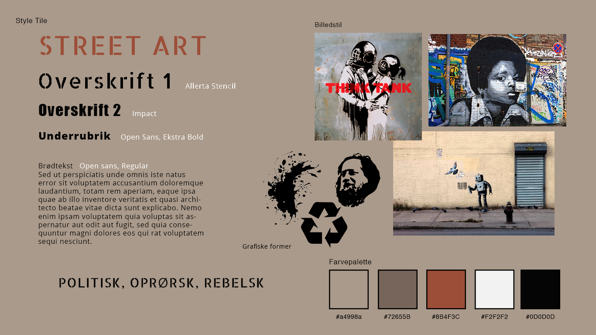

01.04.04 Stilartsite final: Street Art site
I dette forløb fik vi til opgave at lave et responsivt web-design til den stilart vi fik udleveret. Her fik jeg til opgave at lave et stilartsite om Street Art. Hele forløbet tilhørte Tema 1: Grundlæggende Webdesign.
Klik her for at se det endelige resultat.

Styletile.
Endelige ikon.
Hele forløbet bestod af 4 underforløb
01.01 Content First
Under dette forløb skulle vi lave research indenfor vores tildelte Stilart, for at finde indhold til vores stilartsite. Her undersøgte vi hvad Street Art helt præcist var, hvor det stammede fra og hvilke tendenser der findes indenfor stilarten. Derudover lærte vi om målgrupper, med fokus på målgruppen 13-16 år, idet vores indhold skulle henvende sig til denne aldersgruppe.
01.02 HTML og CSS
Vi blev introduceret til programmet Brackets, og lærte om de grundlæggende regler indenfor kodning.
01.03 User Interface
Vi lavede et splashbillede (forside) samt et ikon til vores stilartsite. Dette foregik ved at søge inspiration fra nettet. Til splashbilledet lavede vi tre forskellige moodboards (ideer) hvorefter man gik videre med den bedste. Til ikonet lavede vi en masse skitser.
01.04 Stilartsite Final
De sidste detaljer på vores stilartsite blev lavet. Vi lærte om mediaquerys der er afgørende for et responsivt webdesign. Her bestemmer man præcist hvornår og hvordan ens inhold skal ændre sig i forhold til hvilket device/format stilartsitet bliver vist på.
Min rolle
Hele forløbet var selvstændigt og jeg stod derfor for alle opgaver selv.
Hvad har jeg lært?
- Grundlæggende HTML og CSS
- Adobe Illustrator
- Adobe Indesign
- Brackets
Introduktion til følgende programmer
- Adobe Photoshop
- Adobe Illustrator
- Adobe Indesign
- Brackets